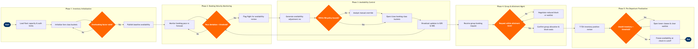

Real-Time Availability & Seat Inventory Control
Network Planning & Scheduling › Revenue Management · 17 L4 steps · 5 phases · 4 decision gates · Updated 2026-10-02 06:38
📊
Process Flow Diagram (BPMN)

📋
L4 Process Steps
| Step | Step Name | Role / Swim Lane | System | Input | Output | KPI | Dec? | Exc? |
|---|---|---|---|---|---|---|---|---|
Phase 1 1.1 |
Load authorized capacity & fleet config | Revenue Management Analyst | Amadeus AltéaRM (NRM) | Fleet assignment output, aircraft subtype capacity tables | Authorized capacity record per flight-date with cabin split | Capacity load accuracy 100% before sales open | N | N |
| 1.2 | Initialize fare class booking buckets | Revenue Management Analyst | Amadeus AltéaRM (NRM) | ATPCO fare class definitions, historical booking curve by O&D | Booking class hierarchy (Y, B, M, H, Q, K, L, U, T, X) with initial seat counts | All booking classes live ≥14 days before departure; 0 missing bucket errors at booking open | N | N |
| 1.3 | Apply overbooking factors by flight segment | Revenue Management Analyst | Amadeus AltéaRM (NRM) | Historical no-show rates, cancellation curves, load factor targets | Authorized booking limit (ABL) per flight exceeding physical capacity | Target involuntary denied boarding rate ≤0.05 per 10,000 passengers | Y | N |
Phase 2 2.1 |
Monitor real-time booking pace vs forecast | Revenue Management Analyst | Amadeus AltéaRM (NRM) | Live booking transactions from Amadeus Altéa PSS, SkyCAST demand forecast | Booking pace index (actual/forecast ratio) per flight per class | Pace variance alert triggered within 15 minutes of threshold breach | N | N |
| 2.2 | Evaluate booking pace deviation threshold | Amadeus AltéaRM (NRM) | Amadeus AltéaRM (NRM) | Booking pace index, departure date proximity, current load factor | Availability action flag: accelerated close, hold, or open lower class | System recommendation generated within 5 minutes of threshold breach; analyst review SLA ≤30 min | Y | N |
| 2.3 | Flag flight for priority availability review | Revenue Management Analyst | Amadeus AltéaRM (NRM) | Availability action flag from automated pace evaluation | Flight placed in analyst work queue with recommended action and revenue impact estimate | ≥90% of flagged flights actioned within analyst SLA; <5% false-positive escalation rate | N | Y |
Phase 3 3.1 |
Generate availability adjustment recommendation | Amadeus AltéaRM (NRM) | Amadeus AltéaRM (NRM) | Current bucket availability, forecast demand, competitive fare filings from ATPCO | Recommended bucket open/close action with projected revenue impact delta | Revenue uplift from accepted recommendations ≥1.5% per adjusted flight vs control group | N | N |
| 3.2 | Validate recommendation against RM policy bounds | Revenue Management Analyst | Amadeus AltéaRM (NRM) | System recommendation, RM policy rules (minimum bucket sizes, blackout dates, alliance blocks) | Approved or overridden availability action | Policy override rate ≤8% of system recommendations; override reason coded for feedback loop | Y | N |
| 3.3 | Apply manual override with documented reason | Senior Revenue Management Analyst | Amadeus AltéaRM (NRM) | Out-of-bounds recommendation, analyst market intelligence, competitive intelligence feed | Manually adjusted bucket availability with override reason code logged | Manual override revenue outcome tracked: ≥60% of overrides must outperform system recommendation at T+7 days post-departure | N | Y |
| 3.4 | Broadcast availability updates to all channels | Amadeus Altéa PSS (automated) | Amadeus Altéa PSS | Approved bucket availability changes from AltéaRM | Updated availability published to Sabre GDS, Travelport GDS, Amadeus GDS, and NDC API Gateway | Availability propagation to all GDS channels within 60 seconds of AltéaRM commit; NDC API latency ≤5 seconds | N | Y |
Phase 4 4.1 |
Receive and assess group booking request | Group Sales Coordinator | Amadeus Altéa PSS | Group booking request (pax count, travel date, origin/destination, fare requirements) | Group inventory assessment report: available seats, impact on individual yield | Group quote turnaround ≤4 hours for ≤50 pax; ≤24 hours for >50 pax | N | N |
| 4.2 | Validate group request against allotment policy | Revenue Management Analyst | Amadeus AltéaRM (NRM) | Group assessment report, flight allotment policy (max % of capacity per group), current availability | Approved or rejected group allotment decision with conditional availability hold | Group allotment approval rate within policy: ≥95% handled without senior escalation; group revenue mix target ≤20% of total flight revenue | Y | N |
| 4.3 | Confirm group block and adjust net inventory | Group Sales Coordinator | Amadeus Altéa PSS | Approved group allotment decision, group fare agreement | Group PNR block confirmed; individual booking class availability reduced by block size | Group block confirmation rate ≥85% within quoted hold period; no-show rate on confirmed groups ≤12% | N | Y |
Phase 5 5.1 |
Conduct T-72h pre-departure inventory review | Revenue Management Analyst | Amadeus AltéaRM (NRM) | Current booking count, remaining availability, forecast final load factor, waitlist count | Pre-departure availability strategy: sell-up, open low classes, or hold current position | Final load factor target ≥83%; revenue per available seat kilometre (RASK) vs budget reviewed at T-72h | N | N |
| 5.2 | Evaluate unsold inventory against threshold | Amadeus AltéaRM (NRM) | Amadeus AltéaRM (NRM) | Current load factor, departure proximity, unsold seat count, waitlist queue depth | Decision flag: open lower fare classes or maintain current availability strategy | Unsold seat recovery via last-minute availability opening: target ≥65% of exposed seats sold at ≥breakeven yield | N | N |
| 5.3 | Open lower fare classes and clear waitlist | Revenue Management Analyst | Amadeus AltéaRM (NRM) | Availability action flag, waitlist passenger queue from Altéa PSS | Lower classes opened in AltéaRM; waitlist passengers auto-confirmed via Altéa PSS | Waitlist clearance rate ≥90% within 2 hours of class opening; confirmed waitlist pax CSAT ≥4.2/5 | N | Y |
| 5.4 | Freeze availability at check-in cutoff | Amadeus Altéa PSS (automated) | Amadeus Altéa PSS | Departure time, check-in cutoff rule (route-specific: 45–90 min before departure) | Availability closed to all booking channels; final booked load factor locked for departure | Check-in cutoff applied accurately on 100% of departures; overbooking resolution (VDB/IDB) initiated within 30 minutes of cutoff if overbooked | N | Y |
📋